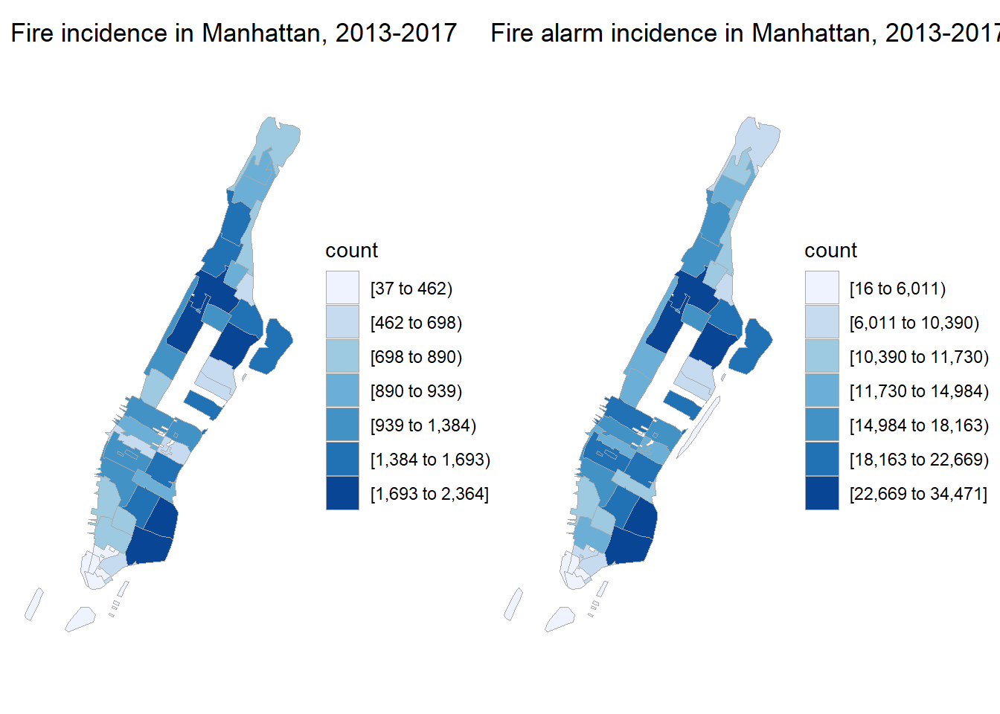
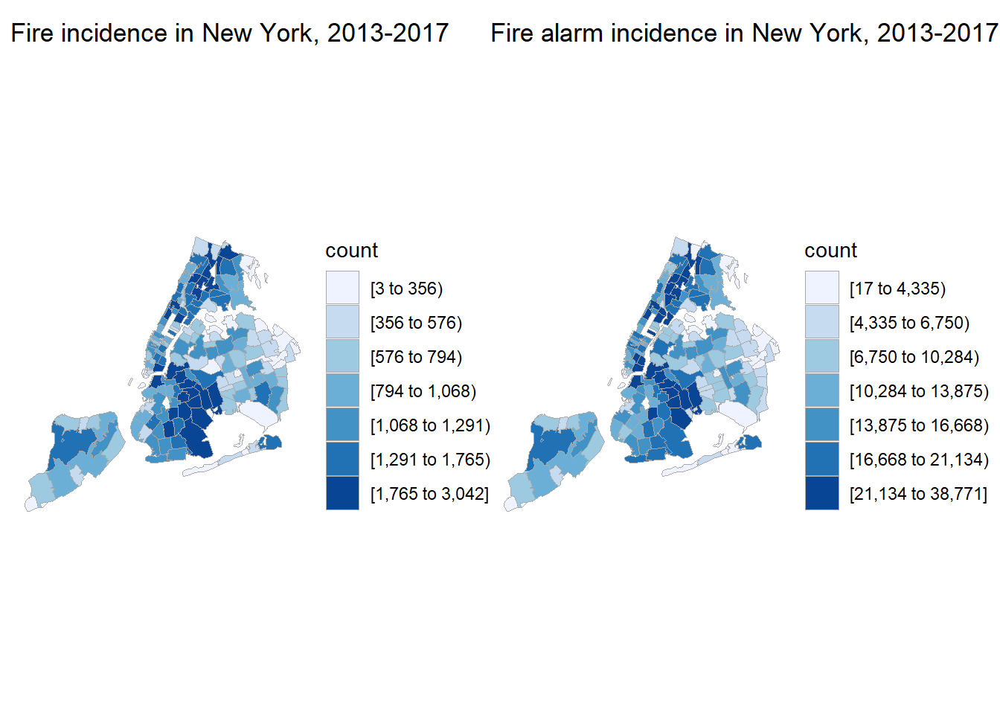

with_detail = read.socrata("https://data.cityofnewyork.us/resource/ibte-hq4u.csv")#tidy data for zip code map
dupli_with = with_detail %>%
select(incident_date_time, incident_type_desc,
property_use_desc, zip_code, borough_desc) %>%
separate(borough_desc, sep = "- ", into = c("n", "borough")) %>%
select(-n) %>%
separate(incident_type_desc, into = c("incident_type", "incident_desc"), sep = "- ") %>%
mutate(incident_type = str_sub(incident_type, 1, 3),
incident_type = as.integer(incident_type))## Warning: Expected 2 pieces. Additional pieces discarded in 914 rows [3472,
## 7257, 10510, 14519, 17735, 22456, 24900, 24904, 25203, 26583, 27950, 30180,
## 31089, 37530, 38893, 41521, 51384, 51596, 54277, 59991, ...].zip_map_data =
dupli_with %>%
mutate(zip_code = str_sub(zip_code, 1, 5)) %>%
filter(zip_code != "" & zip_code != "99999" &
zip_code != "10691" & zip_code != "11251") %>%
rename(region = zip_code) #prepare a data frame for zip code map
zip_map_data_for_map =
zip_map_data %>%
group_by(region) %>%
summarize(value = n())
all_alarm_ny =
zip_choropleth(zip_map_data_for_map,
zip_zoom = zip_map_data_for_map$region,
title = "Fire alarm incidence in New York, 2013-2017",
legend = "count") +
coord_map()## Coordinate system already present. Adding new coordinate system, which will replace the existing one.#prepare a data frame for zip code map, manhattan only
zip_map_data_for_map =
zip_map_data %>%
filter(borough == "Manhattan") %>%
group_by(region) %>%
summarize(value = n())
all_alarm_manha =
zip_choropleth(zip_map_data_for_map,
zip_zoom = zip_map_data_for_map$region,
title = "Fire alarm incidence in Manhattan, 2013-2017",
legend = "count") + coord_map()## Coordinate system already present. Adding new coordinate system, which will replace the existing one.zip_map_data_for_map =
zip_map_data %>%
filter(incident_type < 165) %>%
group_by(region) %>%
summarize(value = n())
fire_ny =
zip_choropleth(zip_map_data_for_map,
zip_zoom = zip_map_data_for_map$region,
title = "Fire incidence in New York, 2013-2017",
legend = "count") + coord_map()## Coordinate system already present. Adding new coordinate system, which will replace the existing one.zip_map_data_for_map =
zip_map_data %>%
filter(incident_type < 165,
borough == "Manhattan") %>%
group_by(region) %>%
summarize(value = n())
fire_manha =
zip_choropleth(zip_map_data_for_map,
zip_zoom = zip_map_data_for_map$region,
title = "Fire incidence in Manhattan, 2013-2017",
legend = "count") + coord_map()## Coordinate system already present. Adding new coordinate system, which will replace the existing one.fire_manha + all_alarm_manha
fire_ny + all_alarm_ny